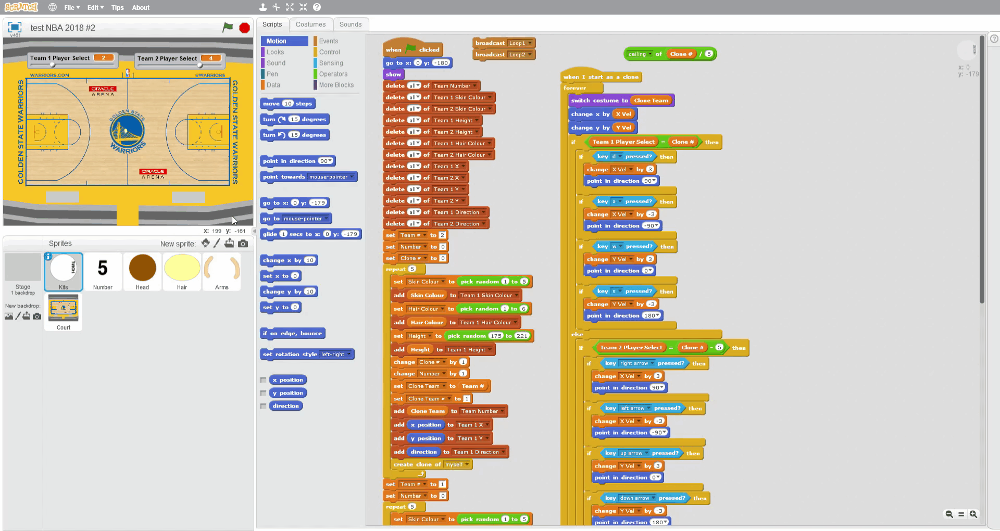

Hi. My name is Abdul-Halim, and I'll be turning 17 at the end of the year. I was born in Adelaide, South Australia, but by descent, I am half-Greek and half-Indonesian. I currently live in Western Australia, and am home-schooled. As far as past education goes, I haven't yet finished high-school, but through OUA, I have completed some undergraduate courses, namely, the fundamentals of; mathematics, physics, english, 3D modelling, and programming. In order to be eligible for a Bachelor of IT, I am currently taking an RMIT course called "Introduction to Information Technology" (...which is what this website happens to be an assignment for, but you already knew that).
Hobbies
Since the 2014 World Cup in Brazil, I have been a fan of football (⚽). As a kid I was almost obsessed with Cristiano Ronaldo, mainly due to how skilfully he dribbled the ball when he was a young player in Manchester. He moved back to Manchester United recently, which got me quite excited.
^Footage of Cristiano Ronaldo.
I have also been a fan of basketball üèÄ ever since the 2016 NBA Finals, where LeBron James and the Cleveland Cavaliers defeated Steph Curry and the Golden State Warriors, after going down 3-1 in a best of 7 finals format.
A Memorable Moment
A memorable moment I have of playing football (⚽) was when I was 11 years old in primary-school. It was the 'winter carnival' and you could choose a sport to play out of AFL football, netball, hockey, and 'soccer' football. Myself and the other kids who chose 'soccer' football travelled by bus to a local field, which had multiple little pitches set up with cones marking the boundaries and goal posts. There were a lot of other teams of kids from schools in neighbouring towns, and we were to play them all one at a time on that day, in (if I remember correctly) half-hour matches.
I remember before one of the matches, the other kids on my team were practising close-range penalty-shots, while I was practising free-kicks from the half-way line. Coincidentally, the very second the match kicked-off I was fouled by a slide-tackle to the leg. "This isn't rugby, mate!" I exclaimed, as I was awarded a free-kick at the half-way line. I stepped up to the free-kick... and blasted it straight past the keeper. (It was a 'knuckle-ball': a powerful type of kick where the ball doesn't spin, causing it to dip a lot and move unpredictably). Unfortunately, the referee deemed it as over the cross-bar (the posts were marked by cones), despite even the opposition teacher/coach acknowledging that the ball had dipped enough to go in. (The referees didn't really know the rules, for example they were giving goal-kicks as corners etc). For the rest of that game, the other team kept on aggressively slide-tackling me, but for the rest of the game, I continued to skilfully dodge the tackles, and a couple of times even putting the ball between their legs (a 'nutmeg'), while they slid.
The gif below is a 'nutmeg' performed by Lionel Messi, similar to the ones I did on the sliding defenders:
Throughout the day, the other kids on my team weren't really helping; when they tried to pass to me (even quite close passes), the ball would roll very slowly and stop short, nowhere near me. And when I passed to them, they held up their hands and ducked, while running away from the ball! My teacher ended up telling me to stop passing and "just bomb it", so I did. Every time I got close to the goal, I kicked it as hard as I could, and for the next few shots in a row, the referees claimed it was over the bar (it wasn't, from that distance you could only hit the ceiling of the net). The teacher asked me, "what are you doing?", and I replied, "you told me to 'bomb it'". She laughed and said, "You know what I meant", and from that point I dribbled the ball more (and aimed my shots lower).
I remember before another game, the kids of the school we were about to play came up to me (they had heard of my good performance in the other games), and were gloating about how I wouldn't possibly be able to keep up with the fastest player in their school, and they were high-fiving him, and getting in my face, laughing, and stuff. Come game-time, however, I was sprinting past him every time, at double his speed... while I was dribbling the ball. I scored four times that game, final score 4-0.
Throughout the day, I played all the matches doing a lot of fancy dribbling skills, including a skill-move where you flick the ball over the defender's head, called a 'rainbow flick'.
üåàThe gif below is a 'rainbow flick' performed by Neymar Jr:
Teachers from other schools were leaving their team's pitches to watch mine, and a couple of them came to me and told me they were impressed. In every game, I was dribbling from beyond the half-way line, past multiple defenders and scoring. In the end, I had scored 3, 4, or 5 goals in most of the matches, and up to 6 and even 7 in some.
The next day back at school, the teacher said to me during a spelling test, "Just wanted to let you know how well you played on Friday. I've never seen anyone play like that -- doing rainbow flicks in the middle of the game..."
Those were the days... ಥ﹏ಥ
Interest In IT
What is your interest in IT? When did your interest in IT start? / Was there a particular event or person that sparked your interest? Outline your IT experience (if any).
I've been interested in technology since I was a kid, as I was interested in the idea of the ability to make my own games. I remember the first PowerPoint I made was on an old laptop when I was around 5 or 6 (it was a story about a red dragon and a white dragon fighting over treasure. I didn't save it, so it is lost in time). When I was around 7, I started experimenting and making games on PowerPoint, using animations and slide hyperlinks on objects. I made a lot of mouse mazes, where you had to move your mouse through the maze without touching the edges, and there were spinning gates and moving obstacles and the like. There was also an escape game, where you could click to go in different rooms and find objects that you could use (like keys), and you had to find clues to use for codes etc. On PowerPoint, I also made games about cars, ninjas, football, etc. When I was 11 I made a basketball game, where you had to click on a moving bar which was a gradient of red-green-red, attempting to get green, and where you clicked determined the accuracy of the shot.
The same year, I was attempting to make something on PowerPoint where an object followed the mouse-pointer. Upon discovering that it was impossible, I found Scratch, a block coding website, which had a code for following the mouse. I began to use it, and saw that you could do much more things in Scratch than in PowerPoint, including using the key-board, and dynamic movement (rather than scripted animation paths on PowerPoint slides). I made a things on the Scratch website, but I was unaware that you could download the project file, so each time I made something, it was gone the next day. The first 2 things I downloaded were a game about football and a fighting game. The fighting game was a 2 player game, with a red stickman fighting a blue one. Using the keyboard, you could move around, jump, kick and punch, and there were primitive frame animations for these actions. Both sides started with 100 health (which was stored in a variable), and getting hit made you lose health. As for the football game, it was more sophisticated, but nothing much. It was top view and there were 3 players on each team. This was a single-player game, with players of the other team set turn and follow the ball. If your team was not in possession of the ball (so, on defence), then a certain keyboard button would switch the player you were controlling, but if you were in possession of the ball, the same button would make you pass the ball. When defending, there was a button to tackle, which had a random chance of success. If you had the ball, there was also a button to shoot, which would make the ball move in an angle toward the goal, plus or minus a random angle of degrees, which made the shots have a possibility to miss.
Over time, I made learnt more, and made more complicated things on Scratch. This is where I developed a real liking for the concept of programming: being stuck on, and pondering over a way to code and implement a feature. And the solution was usually some complicated application of mathematics, which I enjoyed thinking over. When I was 13, I was making a 2D platformer game of a secret-agent, called 'the Dude'. In the game you would have to jump about (as you do in platformers) and solve puzzles, but there would also be enemies shooting at you, and you would be able to shoot them and take their superior weapons (temporarily -- limited ammo). There was to be different maps to progress to, including (but not limited to); the desert, the jungle, and the boss's lair in a volcano. However at this point, the only map was the 'Training-Ground', which was sort of like a tutorial level, and instead of enemies, there were just training-dummies.
The Dude, shooting, and keys.
Swimming, with splashes, bubbles, and oxygen-levels.
I had a level with a rope, and I wanted the player-character to be able to swing on the end of it. However, I was unsure of how to get his x-y position at the end of the rope, pointing at whatever angle it might be. I thought about it for a while, and one day I was looking into something involving trigonometry, and I realised that I could use it for the rope problem: x = (((sin of rope_direction)*rope_climb)+rope_x) and y = (((cos of rope_direction)*rope_climb)+rope_y)
The Rope
Death
In 2018, I was recommended a video about basketball, which had a top down 2D animation, and the players as sort of circles with arms.
An image of the video.
This gave me an idea to make a top view 2D basketball game with similar looking figures. I wanted to be able to have the players represent real basketball players, or have a random variance, so I wanted there to be a range of skin-colours, hair-colours and jersey-numbers. Unfortunately, using Scratch costumes, there would be far too many combinations. If there was 5 hair-colours, 5 skin-colours and 5 jersey-numbers, that would be 5^3 costumes. Oh, and there had to be at least two teams, so double that for jersey-colours.
I realised that this was tedious, and limiting. I soon found a better way to do it, which involved splitting the players up so that their parts could vary independently. That way I would only need 5 costumes a part, but have the complete variance of player-appearance. I used lists to make each part aware of the position and direction of their respective body.

I began to make an NBA game using this concept. I added more teams/jerseys, and had numbers up to 15 in 10 different colours. If I instead had made a costume for every combination, if I had 30 jerseys (for 30 NBA teams), that would be 5 * 5 * 15 * 10 * 30 = 112,500 different costumes!
Using the method I used in the basketball game, I decided to make an new football game, called 'FOOTBALL 19'. I also added different hair-styles, and numbers up to 99 in 10 different colours. I achieved this by separating the first and second digit, allowing them to vary independently. (With just 13 different teams, this would normally have made 1,608,750 combinations). I zoomed-in the field and made it scroll, which made it much more spacious. I also added stats, which made some players shoot better or run faster, etc. I planned to make a game-mode where you could buy players and build your own team; I called it 'Dream Team'. Before I had made it 11 players aside, and before I had added AI, I made a trailer-like video of the unfinished game:
Similar to in the 'FIFA' games, I made a pack system, which is shown near the end of the video. This allows you to get a random set of players, and the better the player, the rarer it is to get them. I thought about the best way to do this for a long time... before I thought of Triangle numbers. The way this works is, instead of choosing out of, say, 10 players, by picking a random number from 1 to 10, it would pick a number from 1 to the 10th triangle number.
Then I had to find a way to calculate from the random number what 'row' it belongs to. I used this formula: . The triangle number solution worked well, making better players rarer. However, there are different levels of packs, and in a gold pack for example, you shouldn't be getting bronze players. I solved this with 'classes', and having double sided triangles (diamond/rhombus) to have a middle point as the most likely, and having two ends as very unlikely.
I also planned to make a Bruce Lee game, which would have been a 2D side-view scrolling platformer, where you would have to fight enemies and been able to pick up weapons such as nunchucks. I wanted the fighting to be quite comprehensive, having high and low punches/kicks as well as normal ones, and also high/low blocks, etc. After completing a level/section, you would get points to upgrade things such as the damage/speed of your punches/kicks, and also unlock a new fancy attack. I wanted it to be quite detailed, for example, if you tried to pick up a nunchuck while already holding one, you would dual-wield nunchucks, like in 'the Way of the Dragon'. I also wanted there to be different outfits on different levels (Fist of Fury outfit, Game of Death jumpsuit, etc.), and after progressing through each level map and defeating the henchmen, you would be able to fight a boss. The boss fights would be in special locations, such as Chuck Norris in the Coliseum, Mr.Han in the hall of mirrors, or Kareem Abdul-Jabbar in the top level of the pagoda. Each boss would have a different speciality (karate black-belt Chuck Norris with max damage/speed, or Mr.Han with his blade hand, etc.). Below is the cover image I made for the game:
I made a two player game, called 'Battleships', where both players sailed around their ships and shot at the other person's. There was health, and you could get more by collecting hearts that appeared randomly across the ocean. Most interestingly, there was money (which you could get more of by collecting coins), and you could use the money for upgrades on your ship or its turret. Because it is a two player game and there is only one mouse, I made the upgrade buttons have keys labelled on them to press.
You could also upgrade the ship to have more turrets, and upgrade each turret individually. For turrets, there are 3 upgrade paths, each with 4 tiers. Below is a gif showing all the first tier upgrades for the turrets. There isn't a visual difference after the damage upgrade, but you can see the increased accuracy and speed:
TIER-1 Turret Upgrades
On Turrets, TIER-3 and 4 are 'elite Tiers', and if you choose an elite tier from one path, the other paths' elite tiers will close. If you upgrade your ship to have 3 turrets, you unlock the elite tier upgrades for the ship. The elite ships are: Destroyer (which has yet another extra turret, making 4), Submarine Launcher (deploys submarines), and Aircraft Carrier (launches planes). The video below is a six-minute cut showcasing turret and plane upgrades:
I planned to make a sequel, with a scrolling map (much more spacious), ability to build forts on land, more upgrades, etc. Below is the cover image which I put together for the sequel:
Since around 2018, I had an idea for a game called 'Battle Empire', which I will go over in more detail in the 'Project Idea' section of this site. But essentially, it was to be a 2D top-view game, with a zooming and tile-scrolling map. This was pretty complicated, and I had to come up with a lot of math to make the tiles array themselves properly while scrolling and zooming. When an individual tile scrolled off-screen, it had to reposition itself where needed and take on the identity of a new block on the map. And when it zoomed, the tiles would need to spread out and resize accordingly, and as there are less tiles on-screen when zoomed in, it would need to identify and remove the off-screen tiles. Similarly, when zooming out, new tiles would need to be created, and they would have to know their individual position and identity. I thought hard on, and found, a formula that would allow tiles to calculate their identity at any given scroll/zoom position. Another problem was that Scratch had a limit of 300 clones, which means that I could only have 300 tiles. I could have a map as big as a list, but a maximum of 300 tiles could be displayed at once. This was an issue when zooming out, as more smaller tiles are needed to fill the screen. I solved this in the following way: if at the current zoom level, there needed to be more than 300 tiles to fill the screen, then the 'block_size' increases. When the block_size increases, one tile increases in size by the width and height of one tile (so at first there is one block, then it increases to the area of 4 blocks, and then 9, and then 16, 25 etc.), and the blocks that were in it's vicinity are removed. The block will take the identity/colour of the mode colour of it's 'absorbed' blocks. So it pretty much decreases the resolution of the tiles/blocks on the map, saving clones.
Eventually while dabbling on this project, I found Scratch to be too limiting, and I began using Python. Python wasn't too difficult, not at least at the depth that I've gone into it. I managed to 'translate' the code from Scratch over to Python quite smoothly. I used Python with the 'pyGame' library, which allowed me to open a display window to run the game in. One thing that changed is that I used no clones, so I didn't need the 'block_size' solution formulas. In Python and pyGame there are no sprites or clones (not that I know of), instead, everything was systematically drawn onto the screen as coded shapes. I added further things to this project and plan to add much more, as I will explain in the 'Project Idea' section.
I also learnt a bit of Java in the 'Intro to Programming' course with RMIT. I haven't really done anything interesting with Java yet, and I probably need to refresh my memory of how to do it.
Why did you choose to come to RMIT?
I was considering learning programming as a career path, since I've been interested in the concept of it for a while. IT seemed to be the closest thing, and I assumed it would cover programming and the like. As for why RMIT specifically... well, it seemed professional, and it was in Melbourne (but online, which was the important part), and it had the degree that I thought I wanted. Oh, and another uni declined me for being 16 or under, if I recall correctly.
What do you expect to learn during your studies?
At first I expected IT to be very similar to programming, but now, I'm not so sure. I see that in this course we will be learning a bit of cloud, data, networking, robotics, security, etc. which is fine (I am not so keen on discussion forums and group work though). Perhaps I may switch degrees, or even study something else entirely, I'm not sure yet.
Ideal Job
*A disclaimer; I am very uncertain about my future. IT is not what I expected, and I realise that even programming would be sitting at a desk, typing, and taking orders, almost all day, every day. I am not sure if I'd want that. All the results for IT on a job finding website are 'IT help-desk, support' etc. which sounds bo-oring. Perhaps I'd like a more... active job? I've considered a lot of things, even police work. Upholding justice, and whatnot. Anyway, for the sake of the assignment I will use an IT-related job as an example.
Include a link, and a snapshot of the job advertisement.
A description (in your own words) of the position, and particularly what makes this position appealing to you.
It didn't really explain what the position does, but I guess you're supposed to know. It says something about raising the standards of Python engineering, whatever that means. Out of the other software developer jobs, this one includes Python, while the others were all Java and C++ (but i intend to learn that). And, it pays up to 8 times as much (for some reason. It must be more complicated... or something, I don't know).
A description of the skills, experience, etc, of the job, myself, and how to get up to standard.
Well, it requires high team work skills, which I am very bad at. I could perhaps improve through practice, such as through this course and future courses. It says you're required to have a relevant master's degree, so I suppose I'd keep on studying. You need a thorough background and experience in Python, C++ and the rest, so I guess I'd... do that.
Personal Profile
*As a disclaimer before finishing the tests; I am not sure how to answer some of these questions. I've been home-schooled since the beginning of high-school, and honestly have not had much social interaction since. For example, a question such as "You regularly make new friends."... I don't, but would I? Or would I stick with a close group of friends? I don't know. I've become quite introverted and socially anxious, but I was quite extraverted, and made a lot of friends in primary school... so I'm not sure what my 'actual' personality is. I took these tests while feeling quite stressed (deadline) so that may bias the results.
Myers-Briggs Personality Test
I took the Myers-Briggs Personality Test at 16Personalities.com, and I got 'INFP-T', or 'Mediator'.
By virtue of being a 'mediator', I am apparently:
Empathic. "Mediators are compassionate and nonjudgmental, always willing to hear another person’s story. When someone opens up to them or turns to them for comfort, they feel honored to listen and be of help."..."Empathy is among this personality type’s greatest gifts, but at times it can be a liability. The troubles of the world weigh heavily on Mediators’ shoulders, and these personalities can be vulnerable to internalizing other people’s negative moods or mindsets. Unless they learn to set boundaries, Mediators may feel overwhelmed by just how many wrongs there are that need to be set right."
Truthful. "Few things make Mediators more uneasy than pretending to be someone they aren’t. With their sensitivity and their commitment to authenticity, people with this personality type tend to crave opportunities for creative self-expression."..."While this is a beautiful trait, these personalities sometimes show a tendency to daydream and fantasize rather than take action. To avoid feeling frustrated, unfulfilled, or incapable, Mediators need to make sure that they take steps to turn their dreams and ideas into reality."
In search of a direction. "People with this personality type tend to feel directionless or stuck until they connect with a sense of purpose for their lives. For many Mediators, this purpose has something to do with uplifting others and their ability to feel other people’s suffering as if it were their own. While Mediators want to help everyone, they need to focus their energy and efforts – otherwise, they can end up exhausted."
Here are some strengths of 'mediators':
Empathic
Generous
Open-Minded
Creative
Passionate
Idealistic
And here are some weaknesses:
Unrealistic
Self-Isolating
Unfocused
Emotionally Vulnerable
Desperate to Please
Self-Critical
Romantic Relationships
Friendships
Parenthood
Career Paths
Workplace Habits
As far as Romantic Relationships are concerned: "Mediators (INFPs) are dreamers and idealists, especially when it comes to romance. People with this personality type believe in the power and beauty of true love, and they sincerely hope never to settle for anything less. It’s fair to say, then, that Mediators approach the world of romance with high expectations. They may have spent years daydreaming about the perfect relationship, imagining how it would feel to share their innermost selves with another person." ... "Mediators don’t just want to find a partner – they want to connect with a soul mate." ... "Mediators pride themselves on their ability to look past a potential partner’s superficial traits – such as appearance, social status, or possessions – and focus on deeper, more meaningful signals of compatibility."... "Mediators share a belief that two people can come together in a relationship and make each other better and happier than they were before." ... "With their active minds and imaginations, people with this personality type tend to develop and carry with them a vision of their ideal partner – a vision that may be based on a favorite fictional character, a person they once knew, or simply the stories they’ve told themselves about how love “should” look. When they meet someone new, most Mediators can’t help but compare that person with the ideal soul mate they’ve envisioned."... "Many people with this personality type dedicate themselves to helping their partners improve their lives. While this is a noble goal, Mediators must be sure to keep track of their own needs and make sure that their partners are really ready to change."... "Mediators tend to promote harmony over disagreement. Although this lends stability to their relationships, it can also lead to problems. To avoid triggering a conflict, Mediators may avoid talking openly about things that are bothering them – instead, they might mentally fixate on the problem or try to solve it on their own. They may also focus on making their partner happy, to the detriment of their own priorities and sense of self." ... "Mediator personalities use their compassion and insight to understand the people they care about, and they draw on their creativity to make their partner feel special."
As far as Friendships are concerned: "When it comes to their social lives, Mediators (INFPs) may find themselves caught in a web of contradictions. People with this personality type crave alone time, but they’re also vulnerable to loneliness. They long to feel accepted and well-liked, but they hate the idea of pretending to be anyone but their authentic selves. And while they hesitate to draw attention to themselves, they don’t want to be invisible, either. The good news is that, in the company of true friends, Mediators can escape the hamster wheel of these insecurities and focus on what really matters. For these personalities, friendship is a precious commodity – an opportunity for two people to lift each other up and change each other’s lives for the better." ... "Perhaps because of their intense investment in these relationships, Mediators tend to feel most fulfilled by spending time with a small, intimate circle of friends. Acquaintances may come and go, but this inner circle is likely to include Mediators’ friends for life." ... "Although Mediators are warm and accepting, they don’t always find it easy to make friends. This may be because superficial, casual relationships can leave these personalities feeling a bit empty. Mediators are looking for lasting, authentic friendships with people who share their desire to think and feel deeply, to do the right thing, and to give more to the world than they take from it." ... "Among kindred spirits, people with this personality type feel accepted and understood, happy to be themselves and bloom in their own time." ... "For Mediators, a true friendship is founded on shared values, not just shared experiences. People with this personality type are unlikely to form strong friendships simply out of convenience. For example, while their affection for their coworkers may be strong, just working in the same office or shop isn’t enough for Mediators to guarantee a substantial friendship. Deeper connections must come into play." ... "When Mediators befriend someone, they may secretly (or not so secretly) hope to stay close with that person for life. These personalities are capable of strong, stable relationships marked by passionate support, subtle poetic wit, and a profound level of emotional insight. Long-standing friendships tend to draw out less obvious aspects of the Mediator personality type, including a fierce protective streak. Many Mediators find that they can stand up for their friends in ways that they’d struggle to manage for themselves. Although Mediators value their friendships, they also need personal space and alone time in order to recharge. At times, people with this personality type may withdraw from even their closest friends in order to reconnect with themselves and restore their energy, as all Introverts must. These departures are usually temporary, but Mediators may need to make sure that their friends don’t feel snubbed by their absence."
As for Parenthood: "For Mediators (INFPs), life is a journey. But even as they find their own way through the world, these personalities feel called to help other people embark on their own journeys toward meaning, fulfillment, and happiness. In their understated, nondomineering way, Mediators love guiding others to learn and grow – and parenthood can be an incredibly rewarding opportunity for them to do exactly that." ... "From the start, Mediator parents aim to be warm, caring, and open-minded. People with this personality type delight in their children’s wide-eyed wonder at the world, and they want to give their children freedom – freedom to form their own opinions, discover their own interests, and grow into their unique selves. Mediator parents counterbalance these freedoms by creating a stable foundation of support and acceptance, in hopes that their children never forget just how much they are loved." ... "Sensitive and perceptive, Mediators attune themselves to their children’s needs and perspectives. They want to know their children as unique, multidimensional individuals rather than as projections of themselves." ... "Mediators may enjoy raising free spirits, but that doesn’t mean that they’re totally hands-off. They want to teach key values to their children, including honesty, compassion, and the importance of caring for others. They also want their children to understand the meaning of personal responsibility, especially when it comes to not hurting others." ... "They take their parenting responsibilities seriously, so it can feel like a personal failure when their children misbehave in ways both large and small. These personalities may be especially upset when they see their children behaving in ways that don’t seem considerate or ethical." ... "With their hyperactive consciences, Mediators may blame themselves for their children’s misbehavior, even when doing so isn’t reasonable or productive." ... "Mediator parents naturally want to serve as good role models. They try to show their children the best side of themselves, keeping their problems, negative emotions, and frustrations under wraps. This can preserve a sense of harmony in the household, helping their children feel safe and cared for." ... "These parents have a remarkable ability to put themselves in other people’s shoes, and this enables them to come up with schedules and rules that truly work for their children’s individual needs." ... "When they balance structure with spontaneity, Mediators can help their children grow into their most caring, responsible, and joyful selves. And that is exactly what these parents strive for – to raise children who recognize their unique gifts and talents and share them with the world."
Regarding Career Paths: "Many Mediators (INFPs) long for a career that doesn’t just take care of the bills but also feels fulfilling. They want to spend their days doing something they genuinely love, preferably without too much stress or drama." ... "For Mediators, an ideal career path should feel like a calling, not just a job. And if it doesn’t involve too many draining social interactions or phone calls, so much the better." ... "Ever the idealists, Mediators might struggle to find a profession that meets their practical needs and fulfills their dreams. These personalities may drift in frustration, waiting for the perfect job to present itself and eventually feeling stuck or worried that they’re not living up to their potential." ... "Alas, there’s no such thing as a perfect job, and the question of whether to settle for a less-than-ideal position can weigh heavily on people with this personality type. Fortunately, Mediators’ creativity, independence, and sincere desire to connect with and help others can help them shine – and find fulfillment – in nearly any line of work." ... "Certain careers and vocations seem to hold a special allure for these personalities. With their curiosity and their love of self-expression, many Mediators dream of becoming writers." ... "Mediators are adaptable, but they may find it demotivating to work in high-stress, bureaucratic, or hectic environments. They can also become frustrated by workplaces that are highly critical or competitive. Workplaces that reward independence tend to be a good fit for Mediators, although they may appreciate some structure and oversight to help them avoid procrastinating and getting lost in thought."
As for Workplace Habits: "Mediators (INFPs) want to feel a sense of purpose in their work. Wherever they find themselves on the job ladder, they try to cultivate an emotional and moral connection to what they do – looking for reassurance that their day-to-day efforts are helping other people in some shape or form. This desire to be of service colors how Mediator personalities respond to authority in the workplace as well as how they express it." ... "As employees, Mediators tend to be loyal, upbeat, and considerate. They take pride in being honest and doing the right thing in all circumstances. People with this personality type also feel gratified by pleasing others, from their bosses to their customers. Mediators feel most motivated when they’re thinking up ways to help others, not worrying about checklists or bottom lines." ... "This explains why praise and positive feedback can make them light up. On the flip side, criticism can lead these personalities to shut down. When faced with punishing expectations or a highly negative boss, they may find it hard to get things done. Add the distraction of a constantly ringing phone or an overflowing inbox, and you have a recipe for a seriously stressed out Mediator." ... "Mediator employees enjoy having freedom and latitude. Their creativity and insight enable them to shake up old, ineffective ways of doing things – as long as they’re given the chance to speak up and make changes. That said, they tend to benefit from deadlines and clear expectations to keep them on track. Otherwise, people with this personality type might get caught up in procrastination, bouncing from one idea to another rather than settling down and crossing tasks off their to-do list." ... "In their quiet way, Mediators can become the glue that holds their workplace together. Although their voice might not be the loudest, they are often admired for their insight, with coworkers routinely coming to them for advice. Pleasant and kindhearted, Mediators don’t like conflict, drama, or workplace politics. Instead, they try to act in ways that foster harmony and cooperation. When someone needs help, Mediators tend to pitch in without any expectation of praise or recognition." ... "As managers, Mediators are among the personality types least likely to act as if they’re in charge. They respect their employees as full-fledged human beings, not just as workers. Rather than make all the decisions themselves, Mediators often ask to hear their employees’ thoughts and opinions." ... "There is a downside to this management style. Sometimes Mediators may struggle to set boundaries, drill down on inefficiencies, or offer criticism, even when it’s necessary."
Reflections
Before taking the test, I was quite sure that the results would be meaningless to me. However, these results described pretty accurately how I feel. I am not sure what to do with it, but it's pretty accurate.
Doing work being the way I am, I will be more easily stressed and overwhelmed, and more likely to end up leaving things to the last minute and struggle with deadlines. On my own, that's all well and fine as long as I get it done. However, working with a group I have others depending on me, and expecting of me. I am afraid that this will make it only more stressful, but I hope that I can get on top of things and get the work done. I also have a great reluctance to communicate (especially by phone!), and I normally never have to working alone, so I worry how that will fare during group work. I am also unsure of what I know and what I should know. I have never really done group work before, and I don't think I would make a very good group member, so I hope I don't let anyone down.
How I SHOULD use this information to form a group, is probably finding people with leadership qualities who will perhaps be helpful and guiding. However, true to my personality, I will instead wait to be auto-assigned to a group to avoid the stress of finding and asking someone. I also feel that after asking and being accepted by someone, you will only disappoint them more (and make them regret accepting you!) if you fail to reach expectations.
Learning Styles Test
I took a Learning Styles Test at personalitymax.com, and I got 'Visual Learner' primarily.
However, it seemed to be approximately balanced at a third each; 35% Visual, 33% Kinetic, 32% Auditory.
I am not sure of how much weight I can put on these results, as the questions seemed quite ambiguous. For example, they were all like, "can you learn in this way? or how about this way?" etc. Well I can learn in all those ways, but I'm not sure which way best. And the other questions were like, "does noise distract you? what about movement?". They ALL distract me, so I'm not sure what that really says. I guess Visual Learning sounds about right though.
As for how this affects my behaviour on a team, perhaps it just means I prefer communicating in emails to phone-calls/group calls. And maybe it means my personal note-taking should be more visual... I don't really know.
I don't really see how being slightly more of a visual learner will change the way someone looks for group members, unless they're REALLY picky. I'm not though, so it doesn't make a difference to me.
Big Five Personality Test
I took a Big Five Personality Test at truity.com, and I scored higher in openness, agreeableness and neuroticism, while I got a lower percentage in conscientiousness and extraversion.
You can analyse these results further by looking at the aspects these traits are made up of. This is using the breakdown of the Big Five, known as the Big Five Aspects:
'Openness' is broken down into 'openness to experiences', which is related to creativity, and intellect. Creativity is more of an interest in aesthetics, while intellect is interest in ideas.
'Conscientiousness' describes a persons self-discipline to pursue their goals. People who are high in conscientiousness are more organised, efficient, and are less likely to be side-tracked. It can be broken into orderliness (which is related to disgust sensitivity), and industriousness, or the focus to do hard work diligently. I scored lower in conscientiousness, probably due to the fact that I am often side-tracked, and this may be associated with high neuroticism/stress.
'Extraversion' is essentially sociability, and is made up of assertiveness and enthusiasm. I scored lower in extraversion, and am perhaps more introverted. I am higher in assertiveness than enthusiasm, as I would say I am quite forthcoming in public, and can handle public situations as normal. Regarding enthusiasm, I do look forward to some public situations, such as going to play basketball, and interact with old friends. While looking forward to it, however, I feel quite anxious.
'Agreeableness' is empathy, and putting others needs before oneself. Agreeableness breaks down into compassion and politeness. People with high agreeableness are more co-operative, while people with low agreeableness are more competitive.
'Neuroticism' is essentially tendency to negative emotion, including anxiety and sadness, among others. Neuroticism can be sub-categorized into withdrawal and volatility. Withdrawal is more or less reclusion in response to negative emotion, while volatility is irritability which is perhaps associated with stress. I scored higher in neuroticism, probably due to feeling low/stressed often.
In summary, I seem to be; open to ideas and interested in learning, easily side-tracked, mostly introverted, morely co-operative, and easily stressed. When working with others, I would probably be reluctant to communicate (lower extraversion), but more co-operative (higher agreeableness). Hopefully I will be able to communicate efficiently, work more conscientiously, and stay calm.
As for how this affects finding group members, it would probably be beneficial to be in a group of agreeable people. It would also possibly be important to have more open group members, as they would be more open to ideas. It would be helpful for someone looking to be in a group to be more extraverted, as it would make communication easier, which is important in group-work.
Project Idea
In case I need to create project within this course, I didn't choose anything complicated or revolutionary, like robots or something. Instead, I chose something that I've had an idea of in the past and have been wanting to make. It would still be a lot of work, but work that I think I can understand.
Overview
In around 2018, I had the idea for a game in which you expand an empire over a tile-based scrolling map and battle with other empires. You can discover new continents, trade with other empires, and defend your territory from other empires’ invasions. You can also build and collect materials/resources, such as felling trees for wood, or mining for iron. The game advances in time, and you start with weapons like bow-and-arrows and swords, to discovering sail ships, catapults, gunpowder, cannons, and so on. It continues to the modern day and beyond, with things like guns, fighter jets, tanks, and aircraft carriers, to perhaps sci-fi weapons of the future. Your discovery advancements is accelerated by your experience in battles, trading, and such. Other empires will also expand themselves, their discovery advancement relative to their experience.
Motivation
Developing a game was given as an example for the 'Project Idea', so I'm led to believe that it will be an acceptable choice. My personal motivation to choose this for my project idea is that I think it is a realistic goal that I could achieve within the course period. Furthermore, I have had the idea for a while, so I already have most things planned out in my head. It would be killing two birds with one stone; I finish the assignment, and I finish a side project I have been wanting to do for a long time. I think what makes this interesting is the historical evolution of various technologies. I have always been fascinated by it, and I think other people who may be interested in history would have been as well. It kind of shows how we got to today. The game includes a lot of history, geography, and science, and I have certainly learnt a lot while researching to make it, and perhaps it may be of slight educational value to the players as well.
Description
Originally, it was to be a 2D top view tile-based map, which could scroll, as well as zoom. Each tile represents a part of the map, or the world. The climate of each tile is calculated, using the tile's calculated heat, latitude, humidity, etc. Using this information, the tile can become a certain biome, having specific flora and fauna. Biomes include deserts (hot and dry), and rainforests/jungles (hot and wet). I have also found a way to calculate a tile's wind speed and direction, based on the Coriolis effect, which includes using the derivative of a sine-wave across the latitudes. Wind may be incorporated in into the climate (I'd have to learn a some more science/geography), including moving evaporation, air moisture and clouds, which sometimes (in real-life) causes the eastern side of a mountain to be a lush rain-forest, while on the west side of the mountain it is bone-dry. Biomes will affect the flora, and you may find cacti in a desert, rubber-trees in the jungle, or deciduous trees in the forest. The fauna will be affected by biome as well, such as leopards in the jungle, and wolves in the forest. The tiles will could be divided into sub-tiles. For example, there could be a grasslands tile, representing 100 by 100 metres, which can be subdivided into 100*100 sub-tiles. The sub-tiles represent a metre squared each, an allows for individual plant tiles, such as wheat tiles, or an apple-tree, on the grass-land. You will be able to choose how large the world is generated, and provided the computational power, it can get quite large indeed. Regarding the gameplay, you will begin with a small area of territory, and a few 'Dudes'. You can train these 'Dudes' and turn them in to axe-men, black-smiths, builders, hunters, farmers, etc. Training Dudes takes time, but this can be sped up by the building of an apprentice's workshop, craft-school or similar. You can use axe-men to fell trees and collect wood, which can be used in building various things. Later on, there will be miners and metals, which will be useful in making many more things. However, in your struggle for food, resources and land, you may bump into other empires. You may choose to try and act diplomatically, or to take them to war. Thus, you will be needing of an army, with warriors and weapons. You can build your army to your own liking, and command them with your battle tactics. The technology evolves, including weapon technology. If you have proficient alchemists and scientists/researchers, you may discover things like gun-powder, or perhaps, you may defeat the enemy and steal their chemical 'recipe'. There will be many more historically accurate technological steps and improvements, such as the path of development from the boat, into the mighty cannon-decked ships of the line of the age of sail, and beyond. Aside from weapons, there are many more technological advancements, such as the steam-powered industrial revolution, the invention of planes and powered flight, or the more modern development of the computer, satellite, and more. Until you have expanded it, you can't see too far away from where your empire is stationed, so you may venture into the unknown and discover new lands, and conquer new empires.
Tools and Technologies
I originally made this on Scratch, and later Python. If I were required to make it anytime soon, I'd use Python again. I used Python, with the pyGame library, to be able to open a display window to run the game. I'm not sure what this would mean, or how it would run, if wanted to, for example, embed it on a website, or was required to put it on GitHub for a project assignment, but I guess that's something I'll have to learn. However, if I had time to learn something like Unity, I might use that, and convert it into a 3D game.
Skills Required
Off and on screen, the AI of the enemy individuals will work by deciding a task to complete, based on the circumstantial situation, and attempt act it out, replicating the actions of a human player. This, in theory, may work, but I look forward to learning about AI in the course to improve it. If I want to make it 3D, I'll probably have to learn something like Unity or Unreal, which I have no experience with. However, if I keep it to Python, I'll still have to research a bunch of history, science, and geography, while using a mathematical approach to program a simulation of reality (such as the Coriolis effect, etc.).
Outcome
I am not sure what solutions this project will bring, or if it will have any significant impact at all. But, I suppose, it would make me happy, if that makes any difference. Below is a gif of where I had gotten with the project, which is worth a thousand words per frame: